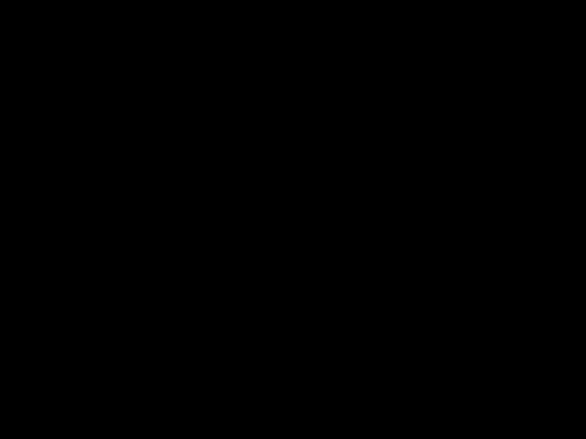
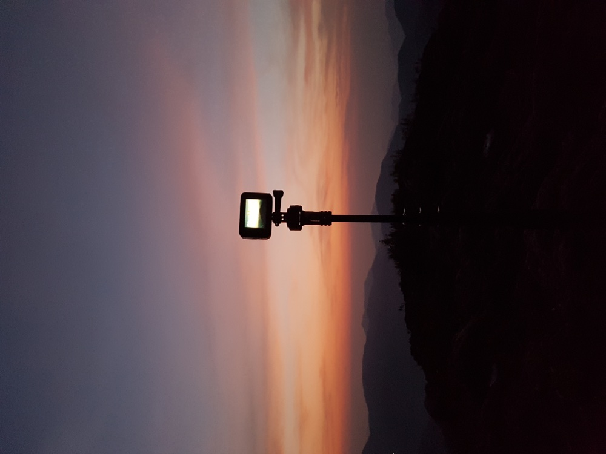
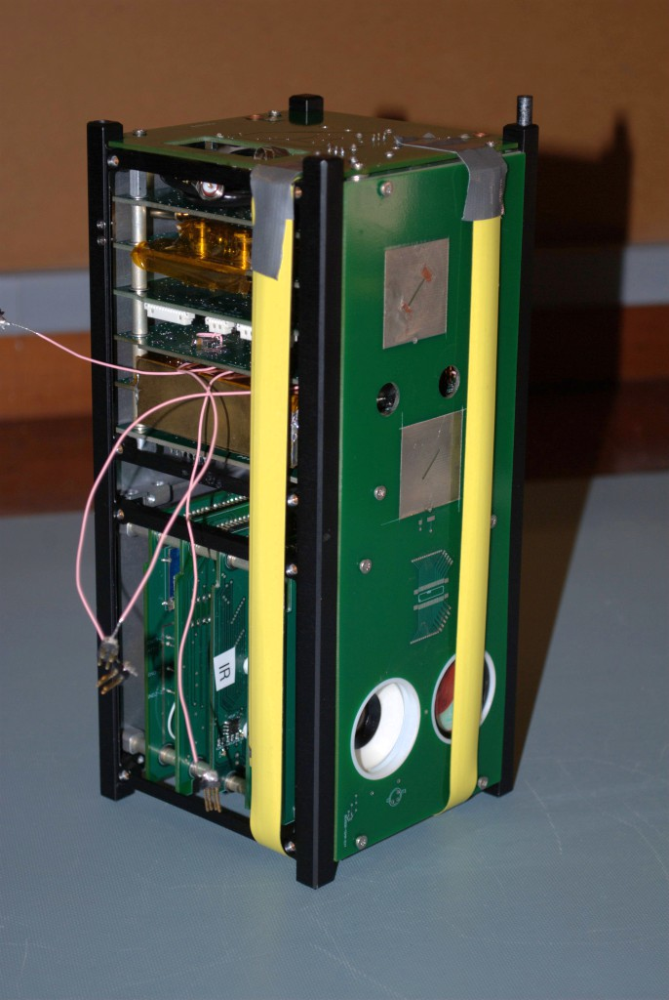

ML Engineer · Stealth AI Startup
I develop in-context learning algorithms for LLMs, evaluate model performance, and deploy models with FastAPI, Hugging Face Transformers and vLLM.
I study how large language models learn from examples in context. Before working on LLMs, I worked on AI for smart glasses and image restoration for cameras.

Photo by CCadio · CC BY 4.0 · croppedAt Meta Reality Labs, I worked on AI for Ray-Ban Meta smart glasses.

Photo by Saiphani02 · CC BY 4.0 · croppedAt GoPro, I developed image and video restoration algorithms for the HERO camera line. My research included denoising, deblurring and super-resolution.

Full photo · Facultad de Ingeniería, UdelarI led development of the system that estimated and controlled the orientation of Uruguay’s first satellite. ANTELSAT launched in June 2014.
Read the systems paper · Master’s thesisI develop in-context learning algorithms for LLMs, evaluate model performance, and deploy models with FastAPI, Hugging Face Transformers and vLLM.
I worked on AI designed for wearable devices.
I worked on computer vision and computational photography, using neural networks to restore detail in images and video.
How can a network remove noise from video while the camera or subject moves? FastDVDnet draws on neighboring frames without explicitly estimating optical flow.
Matias Tassano, Julie Delon and Thomas Veit
A. Monod, J. Delon, A. Almansa, E. Coupeté and M. Tassano
C. Laroche, A. Almansa, E. Coupeté and M. Tassano
C. Laroche, A. Almansa and M. Tassano
C. Laroche and M. Tassano
A. Monod, J. Delon and M. Tassano
Paris Descartes University
ENS Cachan
Universidad de la República